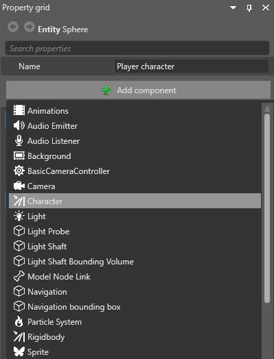

Characters
Beginner Designer
Character colliders are used for player and script-controlled characters such as NPCs. Entities with character components can only be moved with SetVelocity, Jump, and Teleport.
Add a character component to an entity
In the Scene Editor, select the entity you want to add the component to.
In the Property Grid, click Add component and select Character.

Note
For the character collider to interact with other physics objects, you also need to set a collider shape in the collider component properties. The capsule shape is appropriate for most character colliders. For more information, see collider shapes.
Component properties
You can adjust the character component properties in the Property Grid.
| Property | Description |
|---|---|
| Collision Group | Sets which collision group the object belongs to. |
| Can Collide With | Sets which groups the object collides with. |
| Collision Events | If this is enabled, the object reports collision events, which you can use in scripts. It has no effect on physics. If you have no scripts using collision events for the object, disable this option to save CPU. |
| Can Sleep | If this is enabled, the physics engine doesn't process physics objects when they're not moving. This saves CPU. |
| Restitution | Sets the amount of kinetic energy lost or gained after a collision. A typical value is between 0 and 1. If the restitution property of colliding entities is 0, the entities lose all energy and stop moving immediately on impact. If the restitution is 1, they lose no energy and rebound with the same velocity they collided at. Use this to change the "bounciness" of rigidbodies. |
| Friction | Sets the surface friction. |
| Rolling Friction | Sets the rolling friction. |
| CCD Motion Threshold | Sets the velocity at which continuous collision detection (CCD) takes over. CCD prevents fast-moving entities (such as bullets) erroneously passing through other entities. |
| CCD Swept Sphere Radius | Sets the radius of the bounding sphere containing the position between two physics frames during continuous collision detection. |
| Gravity | For rigidbodies, sets a custom gravity vector applied if Override Gravity is selected. For characters, specifies how much gravity affects the character. |
| Step Height | The maximum height the character can step onto. |
| Fall Speed | The maximum fall speed. |
| Max Slope | The maximum slope the character can climb, in degrees. |
| Jump Speed | The amount of jump force. |